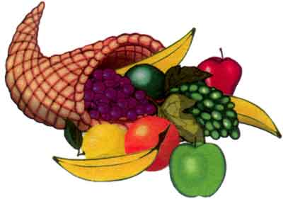
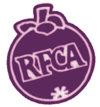

These archives are the work of Pat Scott from Western Australia who created this website for all of us.
Project initiated by Sheryl Backhouse from the Sub-Tropical Fruit Club of Qld Inc.
For enquiries relating to this website, email info(*at*)rfcarchives.org.au
The Mission Statement
To rescue the information compiled by members of The Rare Fruit Council of Australia, which was published in newsletters between March 1980 and August 2002, and to make this information publically available.
The Articles
* * * * * * * * *


Web hosting services sponsored by Flexihostings.net.au